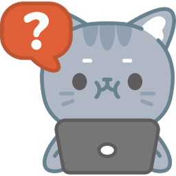

Bem-vindo a seção de perguntas frequentes onde você poderá encontrar explicações
claras e
rapidas sobre o nosso sistema.
Caso ainda possua perguntas sobre o nosso sistema após isso, contate a nossa equipe abaixo:

O Style Custom é uma loja de roupas que oferece produtos personalizáveis e estilos únicos,
permitindo aos clientes expressarem sua individualidade através de roupas exclusivas. No e-commerce,
você pode destacar funcionalidades como personalização de estampas, escolha de cores, tamanhos sob
medida e até mesmo colaboração em designs exclusivos. Essa abordagem agrega valor e cria um
diferencial competitivo para a marca.
Na tela inicial, canto superior direito, ao lado da barra
de pesquisa você consegue acessar o seu perfil, lá vão estar todas as suas informaçaões e você pode
alterar facilmente.
Em seu perfil, onde tem todas as informações sobre você, ao
lado de endereço tem um pequeno lápis, basta apertar nele e colocar o novo endereço facilmente.
Em seu perfil, onde tem todas as informações sobre você, ao
lado de telefone tem um pequeno lápis, basta apertar nele e colocar o novo número de telefone.
Em processo...
Em processo...
Em processo...
O Style Custom aceita a seguintes formas de pagamento:
Crédito, Débito e Pix.